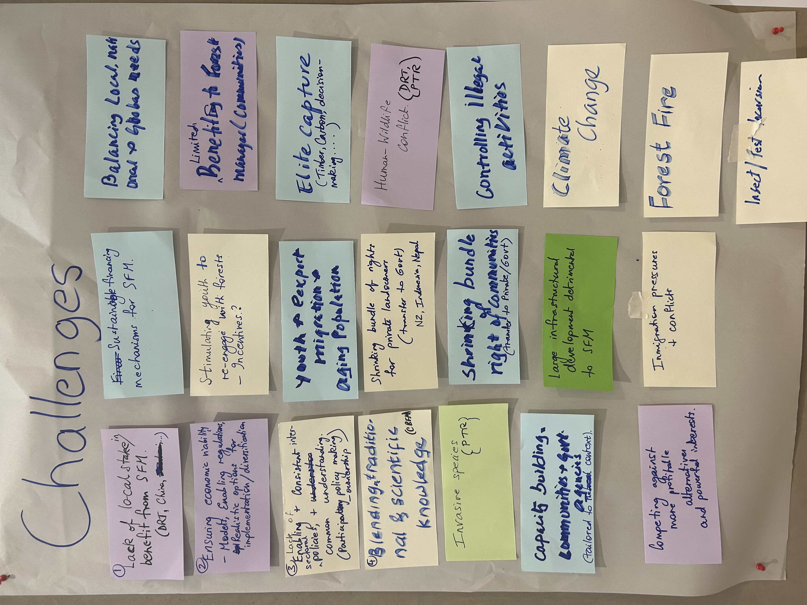
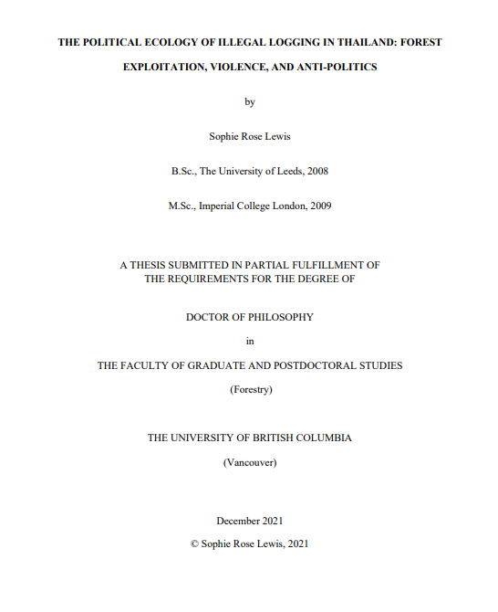

Strategic Planning & Technical Writing
Project concept note with logframe for an EU call to support Timor-Leste's Directorate General of Forestry in strengthening institutional capacity for priority forestry projects.


About
Forest Governance Lab is the independent consulting practice of Dr. Sophie Rose Lewis.
With over 15 years working across Southeast Asia, I specialise in forest governance, social forestry, resource rights and land tenure security — from the ground level through to policy.
I work with NGOs, governments, civil society organisations, Indigenous Peoples, and local communities, bringing both technical depth and practical understanding.
I focus on outputs that are high-quality, grounded, and actionable.
Services
Producing and editing technical and communications outputs for diverse audiences.
from policy briefs and donor reporting to knowledge products and strategic communications.
Leading and delivering applied and participatory research.
from scoping studies and literature reviews to qualitative fieldwork and peer-reviewed publications.
Designing and delivering research-to-policy engagement strategies.
from stakeholder mapping and advocacy planning to evidence communication and science-policy dialogue.
Supporting organisations to translate vision into action.
from strategic planning facilitation and programme design to theory of change and results framework development.
Building and facilitating capacity-development and training programmes for diverse stakeholders and communities.
from needs assessment and training design to facilitation and learning evaluation.
Selected Works

Strategic Planning & Technical Writing
Project concept note with logframe for an EU call to support Timor-Leste's Directorate General of Forestry in strengthening institutional capacity for priority forestry projects.

Policy Outreach & Capacity Development
Research-to-policy strategy across seven Southeast Asian countries, coordinating National Advisory Committees and delivering regional participatory action research training.

Applied Research & Technical Writing
Technical synthesis of sustainable forest management case studies across ten countries, examining two decades of changes in tenure, policy, and community resilience.

Applied Research & Policy Advisory
Scoping study for the FCDO-funded REDAA programme, identifying research-to-action priorities for restoration and sustainable natural resource management across Southeast Asia.

Applied Research & Technical Writing
Land and resource rights profile for Trang, Thailand, analysing palm oil supply chain risks linked to tenure insecurity for Indigenous Peoples and customary communities.
Strategic Planning & Technical Writing
Project concept note with logframe for an EU call to support Timor-Leste's Directorate General of Forestry in strengthening institutional capacity for priority forestry projects.
Policy Outreach & Capacity Development
Research-to-policy strategy across seven Southeast Asian countries, coordinating National Advisory Committees and delivering regional participatory action research training.
Applied Research & Technical Writing
Technical synthesis of sustainable forest management case studies across ten countries, examining two decades of changes in tenure, policy, and community resilience.
Applied Research & Policy Advisory
Scoping study for the FCDO-funded REDAA programme, identifying research-to-action priorities for restoration and sustainable natural resource management across Southeast Asia.
Applied Research & Technical Writing
Land and resource rights profile for Trang, Thailand, analysing palm oil supply chain risks linked to tenure insecurity for Indigenous Peoples and customary communities.
Publications
Exemplary forest management revisited
Contributing author, pp. 19–31.

Safeguarding customary forest tenure
Lead Author

Research-to-action priorities in Southeast Asia
Lead Author

The political logics of EU-FLEGT
Lead Author



Education & Research
Postdoctoral Research Fellowship, Faculty of Political Science
Qualitative field research on forest governance and land rights in Thailand, applying a political ecology framework to examine inequality in resource access under Thailand's Bio-Circular-Green Economic Model.
Doctor of Philosophy, Forestry
Investigated forest governance in Thailand across two scales: how governance structures shape livelihoods and resource access of Karen Pwo Indigenous communities adjacent to protected areas; and how competing actor interests influenced the reform of timber legality and smallholder tenure through Thailand's EU-FLEGT Voluntary Partnership Agreement process.
Master of Science, Forest Conservation
Reviewed literature and surveyed 26 EU states to assess climate change adaptation strategies for protected forests, providing policy recommendations for biodiversity policy.
Contact
Get in touch to start a discussion on consultations or collaboration with the Lab